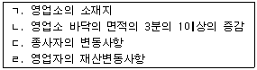

미용사(일반) (2011-02-13 기출문제)
1과목: 미용이론
1. 다음 중 콜드 퍼머넌트 웨이브 시술 시 두발에 부착된 제1액을 씻어 내는데 가장 적합한 린스는?
- 에그 린스(egg rinse)
- 산성 린스(acid rinse)
- 레몬 린스(lemon rinse)
- 플레인 린스(plain rinse)
(정답률: 66%)

2. 퍼머넌트 웨이브 시술 중 테스트 컬(test crl)을 하는 목적으로 가장 적합한 것은?
- 2액의 작용 여부를 확인하기 위해서이다.
- 굵은 모발, 혹은 가는 두발에 로드가 제대로 선택 되었는지 확인하기 위해서이다.
- 산화제의 작용이 미묘하기 때문에 확인하기 위해서이다.
- 정확한 프로세싱 시간을 결정하고 웨이브 형성 정도를 조사하기 위해서이다.
(정답률: 85%)
3. 스트록커트(stroke cut) 테크닉에 사용하기 가장 적합한 것은?
- 리버스 시저스(Reverse scissors)
- 미니 시저스(Mini scissors)
- 직선날 시저스(Cutting scissors)
- 곡선날 시저스(R-scissors)
(정답률: 58%)
4. 다음 중 가는 로드를 사용한 콜드 퍼머넌트 직후에 나오 는 웨이브 로 가장 가까운 것은?
- 내로우 웨이브(narrow wave)
- 와이드 웨이브(wide wave)
- 새도우 웨이브(shadow wave)
- 호리존탈 웨이브(horizontal wave)
(정답률: 68%)
5. 두발의 양이 많고, 굵은 경우 와인딩과 로드의 관계가 옳은 것은?
- 스티랜드를 크게 하고, 로드의 직경도 큰 것을 사용.
- 스티랜드를 적게 하고, 로드의 직경도 작은 것을 사용.
- 스티랜드를 크게 하고, 로드의 직경도 작은 것을 사용.
- 스티랜드를 적게 하고, 로드의 직경도 큰 것을 사용.
(정답률: 71%)
6. 손톱을 자르는 기구는?
- 큐티클 푸셔(Cuticle pusher)
- 큐티클 니퍼즈(Cuticle nippwes)
- 네일 파일(Nail file)
- 네일 니퍼즈(Nail nippers)
(정답률: 74%)
7. 두발을 탈색한 후 초록색으로 염색하고 얼마동안의 기간이 지난 후 다시 다른 색으로 바꾸고 싶을 때 보색관계를 이용하여 초록색의 흔적을 없애려면 어떤 색을 사용하면 좋은가?
- 노란색
- 오렌지색
- 적색
- 청색
(정답률: 78%)
8. 헤어린스의 목적과 관계없는 것은?
- 두발의 엉킴 방지
- 모발의 윤기 부여
- 이물질 제거
- 알카리성을 약산성화
(정답률: 85%)
9. 화장법으로는 흑색과 녹색의 두 가지 색으로 윗 눈꺼풀에 악센트를 넣었으며, 붉은 찰흙을 샤프란(꽃 이름임)을 조금씩 썩어서 이것을 볼에 붉게 칠하고 입술연지로도 사용한 시대는?
- 고대 그리스
- 고대 로마
- 고대 이집트
- 중국 당나라
(정답률: 79%)
10. 현대미용에 있어서 1920년대에 최초로 단발머리를 함으로 써 우리나라 여성들의 머리형에 혁신적인 변화를 일으키게 된 계기가 된 사람은?
- 이숙종
- 김활란
- 김상진
- 오엽주
(정답률: 85%)
11. 업스타일을 시술할 때 백코밍의 효과를 크게 하고자 세모난 모양의 파트로 섹션을 잡는 것은?
- 스퀘어 파트
- 트라이앵귤러 파트
- 카우릭 파트
- 렉탱귤러 파트
(정답률: 79%)
12. 원랭스의 정의로 가장 적합한 것은?
- 두발의 길이에 단차가 있는 상태의 커트
- 완성된 두발을 빗으로 빗어 내렸을 때 모든 두발이 하나의 선상으로 떨어지도록 자르는 커트
- 전체의 머리 길이가 똑같은 커트
- 머릿결을 맞추지 않아도 되는 커트
(정답률: 82%)
13. 고객이 추구하는 미용의 목적과 필요성을 시각적으로 느끼게 하는 과정은 어디에 해당하는가?
- 소재
- 구상
- 제작
- 보정
(정답률: 62%)
14. 플랫 컬의 특징을 가장 잘 표현한 것은?
- 컬의 루프가 두피에 대하여 0도 각도로 평평하고 납작하게 형성되어진 컬을 말한다.
- 일반적 컬 전체를 말한다.
- 루프가 반드시 90도 각도로 두피 위에 세워진 컬로 볼륨을 내기 위한 헤어스타일에 주로 이용된다.
- 두발의 끝에서부터 말아온 컬을 말한다.
(정답률: 68%)
15. 다음의 눈썹에 대한 설명 중 틀린 것은?
- 눈썹은 눈썹머리, 눈썹산, 눈썹꼬리로 크게 나눌 수 있다.
- 눈썹산의 표준 형태는 전체 눈썹의 1/2되는 지점에 위치하는 것이다.
- 눈썹산의 전체 눈썹의 1/2되는 지점에 위치해 있으면 볼이 넓게 보이게 된다.
- 수평상 눈썹은 긴 얼굴을 짧게 보이게 한때 효과적이다.
(정답률: 60%)
16. 완성된 두발선 위를 가볍게 다음에 커트하는 방법은?
- 테이퍼링(tapering)
- 틴닝(thinning)
- 트리밍(trimming)
- 싱글링(shingling)
(정답률: 50%)
17. 레이저(razor)에 대한 설명 중 가장 거리가 먼 것은?
- 세이핑 레이저를 이용하여 커팅하면 안정적이다.
- 초보자는 오디너리 레이저를 사용하는 것이 좋다.
- 솜털 등을 깎을 때 외곡선상의 날이 좋다.
- 녹이 슬지 않게 관리를 한다.
(정답률: 82%)
18. 이마의 양쪽 끝과 턱의 끝 부분을 진하게, 뺨 부분을 엷게 화장하면 가장 잘 어울리는 얼굴형은?
- 삼각형 얼굴
- 원형 얼굴
- 사각형 얼굴
- 역삼각형 얼굴
(정답률: 57%)
19. 다공성 모발에 대한 사항 중 틀린 것은?
- 다공성모란 두발의 간층 물질이 소실되어 두발 조직 중에 공동이 많고 보습작용이 적어져서 두발이 건조해 지기 쉬우므로 손상모를 말한다.
- 다공성모는 두발이 얼마나 빨리 유액을 흡수하느냐에 따라 그 정도가 결정된다.
- 다공성의 정도에 따라서 콜드웨이빙의 프로세싱 타임과 웨이빙의 용액의 정도가 결정된다.
- 다공성의 정도가 클수록 모발의 탄력이 적으므로 프로세싱 타임을 길게 한다.
(정답률: 68%)
20. 언더 메이크업을 가장 잘 설명한 것은?
- 베이스 컬러라고도 하며 피부색과 피부결을 정돈하여 자연스럽게 해준다.
- 유분과 수분, 색소의 양과 자르 제조 공정에 따라 여러 종류로 구분 된다.
- 효과적인 보호막을 결정해주며 피부의 결점을 감추려 할 때 효과적이다.
- 파운데이션이 고루 잘 펴지게 하며 화장이 오래 잘 지속 되게 해주는 작용을 한다.
(정답률: 58%)
2과목: 공중보건학
21. 다음 중 특별한 장치를 설치하지 아니한 일반적인 경우에 실내의 자연적인 환기에 가장 큰 비중을 차지하는 요소는?
- 실내외 공기 중 CO2의 함량의 차이
- 실내외 공기의 습도차이
- 실내외 공기의 기온차이 및 기류
- 실내외 공기의 불쾌지수 차이
(정답률: 53%)
22. 비타민 결핍증인 불임증 및 생식불능과 피부의 노화방지 작용 등과 가장 관계가 깊은 것은?
- 비타민A
- 비타민B 복합체
- 비타민E
- 비타민D
(정답률: 46%)
23. 환경오염의 발생요인인 산성비의 가장 주요한 원인과 산도는?
- 이산화탄소 pH 5.6이하
- 아황산가스 pH 5.6이하
- 염화불화탄소 pH 6.6이하
- 탄화수소 pH 6.6이하
(정답률: 61%)
24. 세계보건기구(WHO)에서 규정된 건강의 정의를 가장 적절 하게 표현한 것은?
- 육체적으로 완전히 양호한 상태
- 정신적으로 완전히 양호한 상태
- 질병이 없고 허약하지 않은 상태
- 육체적, 정신적, 사회적 안녕이 완전한 상태
(정답률: 92%)
25. 주로 7~9월 사이에 많이 발생되며, 어패류가 원인이 되어 발병, 유행하는 식중독은?
- 포도상구균 식중독
- 살모넬라 식중독
- 보툴리누스균 식중독
- 장염 비브리오 식중독
(정답률: 72%)
26. 돼지와 관련이 있는 질환으로 거리가 먼 것은?
- 유구조충
- 살모넬라증
- 일본뇌염
- 발진티푸스
(정답률: 41%)
27. 한 국가가 지역사회의 건강수준을 나타내는 지표로서 대표적인 것은?(오류 신고가 접수된 문제입니다. 반드시 정답과 해설을 확인하시기 바랍니다.)
- 질병이환률
- 영아사망률
- 신생아사망률
- 조사망률
(정답률: 82%)
28. 위생해충의 구제방법으로 가장 효과적이고 근본적인 방법 은?
- 성충 구제
- 살충제 사용
- 유충 구제
- 발생원제거
(정답률: 77%)
29. 파리에 의해 주로 전파될 수 있는 전염병은?
- 페스트
- 장티프스
- 사상충증
- 황열
(정답률: 72%)
30. 기온측정 등에 관한 설명 중 틀린 것은?
- 실내에서는 통풍이 잘 되는 직사광선을 받지 않은 곳에 매달아 놓고 측정하는 것이 좋다.
- 평균기온은 높이에 비례하여 하강하는데, 고도 11,000m 이하에서는 보통 100m 당 0.5~0.7도 정도이다.
- 측정할 때 수은주 높이와 측정자의 눈의 높이가 같아야 한다.
- 정상적인 날의 하루 중 기온이 가장 낮을 때는 밤 12시 경이고 가장 높을 때는 오후 2시경이 일반적이다.
(정답률: 62%)
3과목: 소독학
31. 고압멸균기를 사용하여 소독하기에 가장 적합하지 않은 것은?
- 유리기구
- 금속기구
- 약액
- 가죽제품
(정답률: 63%)
32. 다음 중 소독의 정의를 가장 잘 표현한 것은?
- 미생물의 발육과 생활을 제지 또는 정지시켜 부패 또는 발효를 방지할 수 있는 것
- 병원성 미생물의 생활력을 파괴 또는 멸살시켜 감염 또 는 증식력을 없애는 조작
- 모든 미생물의 생활력을 파괴 또는 멸살 또는 파괴 시키는 조작
- 오염된 미생물을 깨끗이 씻어내는 작업
(정답률: 76%)
33. 병원성 미생물이 일반적으로 증식이 가장 잘 되는 pH의 범위는?
- 3.5~4.5
- 4.5~5.5
- 5.5~6.5
- 6.5~7.5
(정답률: 41%)
34. 다음 중 일회용 면도기를 사용함으로서 예방 가능한 질병은? (단, 정상적인 사용의 경우를 말한다.)
- 옴(개선)병
- 일본뇌염
- B형 간염
- 무좀
(정답률: 85%)
35. 소독약의 살균력 지표로 가장 많이 이용되는 것은?
- 알코올
- 크레졸
- 석탄산
- 포름알데이드
(정답률: 68%)
36. 산소가 있어야만 잘 성장할 수 있는 균은?
- 호기성균
- 혐기성균
- 통기혐기성균
- 호혐기성균
(정답률: 61%)
37. 다음 중 화학적 살균법이라고 할 수 없는 것은?
- 자외선살균법
- 알콜살균법
- 염소살균법
- 과산화수소살균법
(정답률: 83%)
38. 소독약의 구비조건에 해당하지 않는 것은?
- 높은 살균력을 가질 것
- 인축에 해가 없어야 할 것
- 저렴하고 구입과 사용이 간편할 것
- 기름, 알콜 등에 잘 용해되어야 할 것
(정답률: 85%)
39. 다음 중 세균의 단백질 변성과 응고작용에 의한 기전을 이용하여 살균하고자 할 때 주로 이용되는 방법은?
- 가열
- 희석
- 냉각
- 여과
(정답률: 58%)
40. 소독액을 표시 할 때 사용하는 단위로 용액 100ml속에 용질의 함량을 표시하는 수치는?
- 푼
- 퍼센트
- 퍼밀리
- 피피엠
(정답률: 72%)
4과목: 피부학
41. 피부의 구조 중 진피에 속하는 것은?
- 과립층
- 유극층
- 유두층
- 기저층
(정답률: 44%)
42. 안면의 각질제거를 용이 하게 하는 것은?
- 비타민C
- 토코페놀
- AHA
- 비타민E
(정답률: 76%)
43. 피부의 산성도가 외부의 충격으로 파괴된 후 자연재연 되는데 걸리는 최소한의 시간은?
- 약 1시간 경과 후
- 약 2시간 경과 후
- 약 3시간 경과 후
- 약 4시간 경과 후
(정답률: 67%)
44. 다음 중 결핍 시 피부표면이 경화되어 거칠어지는 주된 영양물질은?
- 단백질과 비타민A
- 비타민D
- 탄수화물
- 무기질
(정답률: 74%)
45. 세포분열을 통해 새롭게 손·발톱을 생산해 내는 곳은?
- 조체
- 조모
- 조소피
- 조하막
(정답률: 64%)
46. 피부색소의 멜라닌을 만드는 색소형성세포는 어느 층에 위치하는가?
- 과립층
- 유극층
- 각질층
- 기저층
(정답률: 58%)
47. 한선(땀샘)의 설명으로 틀린 것은?
- 체온을 조절한다.
- 땀은 피부의 피지막과 산성막을 형성한다.
- 땀을 많이 흘리면 영양분과 미네랄을 잃는다.
- 땀샘은 손, 발바닥에는 없다.
(정답률: 76%)
48. 다음 중 피부의 면역기능에 관계하는 것은?
- 각질형성 세포
- 랑게르한스 세포
- 말피기 세포
- 머겔 세포
(정답률: 78%)
49. 세포의 분영증식으로 모발이 만들어지는 곳은?
- 모모(毛母)세포
- 모유두
- 모구
- 모소피
(정답률: 66%)
50. 세안용 화장품의 구비조건으로 부적당한 것은?
- 안정성 = 물이 묻거나 건조해지면 형과 질이 잘 변해야 한다.
- 용해성 = 냉수나 온탕에 잘 풀려야 한다.
- 기포성 = 거품이 잘나고 세정력이 있어야 한다.
- 자극성 = 피부를 자극시키지 않고 쾌적한 방향이 있어야 한다.
(정답률: 82%)
5과목: 공중위생법규
51. 이·미용사의 면허를 받을 수 없는 자는?
- 전문대학에서 이용 또는 미용에 관한 학과를 졸업한 자
- 교육과학기술부장관이 인정하는 이·미용고등학교를 졸업한 자
- 교육과학기술부장관이 인정하는 고등기술학교에서 6개월 수학한 자
- 국가기술자격법에 의한 이·미용사 자격취득자
(정답률: 84%)
52. 다음 중 이·미용업 영업자가 변경신고를 해야 하는 것을 모두 고른 것은?

- ㄱ
- ㄱ,ㄴ
- ㄱ,ㄴ,ㄷ
- ㄱ,ㄴ,ㄷ,ㄹ
(정답률: 63%)
53. 영업소 외에서의 이용 및 미용업무를 할 수 없는 경우는?
- 관할 소재동지역 내에서 주민에게 이·미용을 하는 경우
- 질병, 기타의 사유로 인하여 영업소에 나올 수 없는 자에 대하여 미용을 하는 경우
- 혼례나 기타 의식에 참여하는 자에 대하여 그 의식의 직전에 미용을 하는 경우
- 특별한 사정이 있다고 인정하여 시장 .군수.구청장이 인정하는 경우
(정답률: 77%)
54. 시장.군수.구청장이 영업정지가 이용자에게 심한 불편을 주거나 그 밖에 공익을 해할 우려가 있는 경우에 영업정지처분에 갈음한 과징금을 부과할 수 있는 금액기준은?
- 1천만 원 이하
- 2천만 원 이하
- 3천만 원 이하
- 4천만 원 이하
(정답률: 40%)
55. 이·미용사 면허증을 분실하여 재교부를 받은 자가 분실한 면허증을 찾았을 때 취하여야 할 조치로 옳은 것은?(오류 신고가 접수된 문제입니다. 반드시 정답과 해설을 확인하시기 바랍니다.)
- 시·도지사에게 찾은 면허증을 반납한다.
- 시장.군수에게 찾은 면허증을 반납한다.
- 본인이 모두 소지하여도 무방하다.
- 재교부 받은 면허증을 반납한다.
(정답률: 59%)
56. 영업자의 지위를 승계한 자는 몇 월 이내에 시장.군수.구청장에게 신고를 하여야 하는가?
- 1월
- 2월
- 6월
- 12월
(정답률: 78%)
57. 이용사 또는 미용사의 면허를 받지 아니한 자 중, 이용사 또는 미용사 업무에 종사할 수 있는 자는?(관련 규정 개정전 문제로 여기서는 기존 정답인 3번을 누르면 정답 처리됩니다. 자세한 내용은 해설을 참고하세요.)
- 이·미용 업무에 숙달된 자로 이·미용사 자격증이 없는 자
- 이·미용사로서 업무정지 처분 중에 있는 자
- 이미용업소에서 이·미용사의 감독을 받아 이·미용업무를 보조하고 있는 자
- 학원 설립·운영에 관한 법률에 의하여 설립된 학원에서 3월 이상 이용 또는 미용에 관한 강습을 받은 자
(정답률: 77%)
58. 이·미용소의 조명시설은 얼마 이상이어야 하는가?
- 50룩스
- 75룩스
- 100룩스
- 125룩스
(정답률: 94%)
59. 다음 위법사항 중 가장 무거운 벌칙기준에 해당하는 자?
- 신고를 하지 아니하고 영업한 자
- 변경신고를 하지 아니하고 영업한 자
- 면허정지처분을 받고 그 정지 기간 중 업무를 행한 자
- 관계 공무원 출입, 검사를 거부한 자
(정답률: 50%)
60. 이·미용업 영업자가 위생교육을 받지 아니한 때에 대한 1차 위반시 행정처분 기준은?
- 경고
- 개선명령
- 영업정지 5일
- 영업정지 10일
(정답률: 78%)